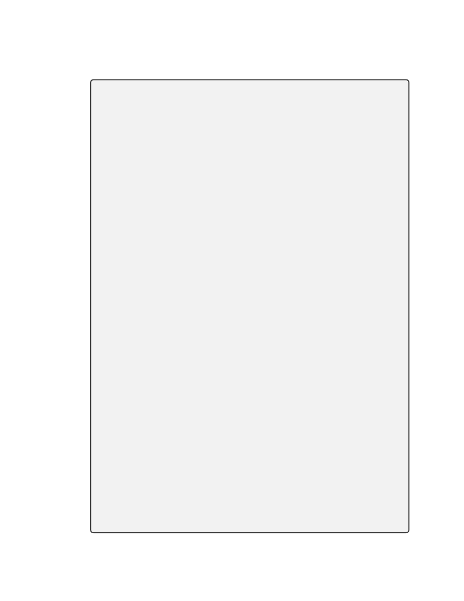
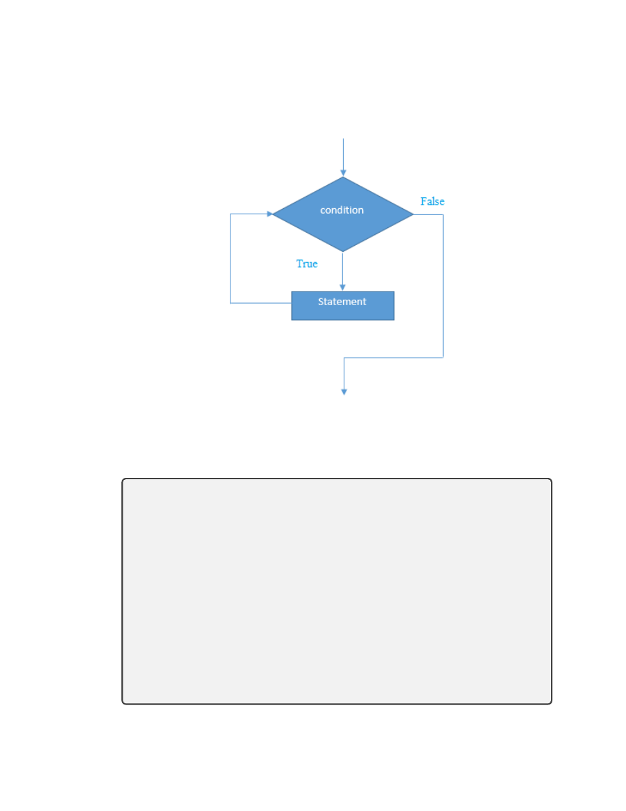
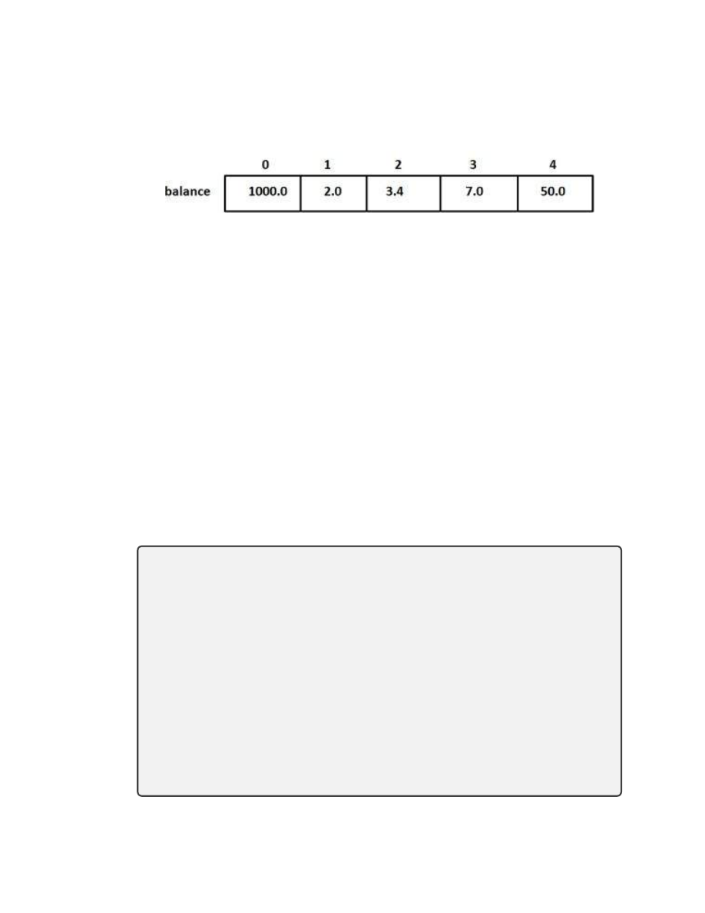

A Freshman C++ Programming Course
Dr. Ali H. Al-Saedi
Mustansiriyah University, Baghdad, Iraq
November 4, 2018
1
Number Systems and Base Conversions
Before studying any programming languages, students should be fa-
miliar with number systems, base conversions and computer data rep-
resentations. There are several number systems which we typically
study and use, such as decimal, binary, octal and hexadecimal.
Mostly, we are familiar with the decimal number system. Any of these
systems is classified according to the values of the base of the number
system.
1.1
The Decimal System
The decimal number system has the value of the base as 10. Thus, in
the decimal system we have 10 different digits, which are 0, 1, 2, 3, 4, 5, 6, 7, 8,
1

and 9. For example,
873
10
= 800 + 70 + 3 = 8 · 10
2
+ 7 · 10
1
+ 3 · 10
0
.
The decimal number system is great for calculations done by humans,
but it is not a suitable system for a computer to use.
1.2
The Binary System
A digital computer contains elements that can be in either of two
states: on or off. We sometimes even see an electrical switch with
two numbers 0 and 1 where 0 means off while 1 means on. Thus,
in digital computers, calculations are most conveniently done using
binary numbers 0 and 1 where each binary digit (bit) can be repre-
sented by one state of a binary switch that is either on or off. However
for humans, binary numbers are hard to read because of their length.
The binary number system is also a positional notation numbering
system, but in this case, the base is not ten, but is instead two. Each
digit position in a binary number represents a power of two. So,
when we write a binary number, each binary digit is multiplied by
an appropriate power of 2 based on the position in the number. For
2

examples,
101101
2
= 1 · 2
5
+ 0 · 2
4
+ 1 · 2
3
+ 1 · 2
2
+ 0 · 2
1
+ 1 · 2
0
= 1 · 32 + 0 · 16 + 1 · 8 + 1 · 4 + 0 · 2 + 1 · · · 1
= 32 + 8 + 4 + 1.
The number in the above example is a 6 bit number.
1.3
Conversion between Decimal and Binary numbers
Converting a number from binary to decimal is quite easy. All that
is required is to find the decimal value of each binary digit position
containing a 1 and add them up.
Example. Convert the following binary numbers to decimal:
10110
2
, 11011
2
, 10001011
2
, 1000100
Solution:
10110
2
= 1 · 2
4
+ 0 · 2
3
+ 1 · 2
2
+ 1 · 2
1
+ 0 · 2
0
= 1 · 16 + 0 · 8 + 1 · 4 + 1 · 2 + 0 · 1
= 16 + 4 + 2
= 22.
3

11011
2
= 1 · 2
4
+ 1 · 2
3
+ 0 · 2
2
+ 1 · 2
1
+ 1 · 2
0
= 1 · 16 + 1 · 8 + 0 · 4 + 1 · 2 + 1 · 1
= 16 + 8 + 2 + 1
= 27.
1111011
2
= 1 · 2
6
+ 1 · 2
5
+ 1 · 2
4
+ 1 · 2
3
+ 0 · 2
2
+ 1 · 2
1
+ 1 · 2
0
= 64 + 32 + 16 + 8 + 2 + 1
= 123.
1000100
2
= 1 · 2
6
+ 0 · 2
5
+ 0 · 2
4
+ 0 · 2
3
+ 1 · 2
2
+ 0 · 2
1
+ 0 · 2
0
= 64 + 4
= 68.
The method for converting a decimal number to binary is one that
can be used to convert from decimal to any number base. It involves
using successive division by the base until the dividend reaches 0. At
each division, the remainder provides a digit of the converted number,
starting with the least significant digit.
Example. Convert the following decimal numbers to binary:
37
10
, 26
10
, 93
10
4

Solution:
37/2 = 18 remainder 1
18/2 = 9 remainder 0
9/2 = 4 remainder 1
4/2 = 2 remainder 0
2/2 = 1 remainder 0
1/2 = 0 remainder 1
The resulting binary number is 100101
2
.
26/2 = 13 remainder 0
13/2 = 6 remainder 1
6/2 = 3 remainder 0
3/2 = 1 remainder 1
1/2 = 0 remainder 1
5

The resulting binary number is 11010.
93/2 = 46 remainder 1
46/2 = 23 remainder 0
23/2 = 11 remainder 1
11/2 = 5
remainder 1
5/2 = 2
remainder 1
2/2 = 1
remainder 0
1/2 = 0
remainder 1
The resulting binary number is 1011101.
Octal Number System
The octal numeral system is the base 8 number system, and uses the
digits 0, 1, 2, . . . , 7. For example, 216
8
, 543
8
.
Conversion From Binary to Octal
Octal numerals can be made from binary numerals by grouping con-
secutive binary digits into groups of three (starting from the right)
and add zeros on the left as needed. For examples,
1001010 = (001)(001)(010)
. We easily can see
001 = 1
6

001 = 1
010 = 2
Thus,
1001010 = (001)(001)(010) = 112
8
In the octal system each place is a power of eight. For examples:
112
8
= 1 × 8
2
+ 1 × 8
1
+ 2 × 8
0
= 64 + 8 + 2 = 74
10
From Octal to Binary
Replace each octal digit with the corresponding 3-bit binary string.
For examples,
213
8
= (010)(001)(011) = 10001011
2
To make it easy, consider the following table:
Octal
0
1
2
3
4
5
6
7
Binary 000 001 010 011 100 101 110 111
more examples,
Octal =
3 4 5
Binary = (011)(100)(101) = 011100101 = 11100101
2
Binary =001 010 001 011 011 110
7

Octal = 1
2
1
3
3
6 = 121336
From Octal to Decimal
The conversion can be performed in the conventional mathematical
way, by showing each digit place as an increasing power of 8. For
example,
345
8
= (3 · 8
2
) + (4 · 8
1
) + (5 · 8
0
) = (3 · 64) + (4 · 8) + (5 · 1) = 229
10
Conversion of decimal to octal (base 10 to base 8)
Example. Convert 177
10
to octal.
177/8 = 22 remainder 1
22/8 = 2 remainder 6
2/8 = 0 remainder 2
Thus, 177
10
= 261
8
.
Note: the answer is to read from bottom to top as 261
8
, the same as
with the binary case.
Hexadecimal Number System
In addition to binary, another number base that is commonly used
in digital systems is base 16.
This number system is called hex-
8

adecimal, and each digit position represents a power of 16.
For
any number base greater than ten, a problem occurs because there
are more than ten symbols needed to represent the numerals for
that number base. Numbers are 0, 1, . . . , 8, 9, A, B, C, D, E, F where
A = 10, B = 11, C = 12, D = 13, E = 14 and F = 15. Note that
16
0
= 1, 16
1
= 16, 16
2
= 256, 16
3
= 4096, 16
4
= 65536, . . .
Conversion of hex to decimal ( base 16 to base 10)
Example: convert F 4C
16
to decimal
F 4C
16
= (F · 16
2
) + (4 · 16
1
) + (C · 16
0
)
= (15 · 256) + (4 · 16) + (12 · 1).
Conversion of decimal to hex ( base 10 to base 16)
Example: convert 4768
10
to hex.
4768/16 = 298
remainder 0
298/16 = 18
remainder 10 = A
18/16 = 1
remainder 2
1/16 = 0
remainder 1
Thus, 4768
10
= 12A0.
9

2
A General Introduction to C++
2.1
To whom is this course directed?
The main goal of this course is to teach students who want to learn
programming in C++ and do not necessarily have any previous ex-
perience or knowledge of any programming languages or computer
skills. C++ has been developed for more than 50 years and it is re-
ally hard to understand it all, but as a student, you are expected to
devote some time and efforts in order to have a better understanding
of C++.
C++ has two components, the language itself and its associated li-
brary. The key features of the library are:
I/O support
strings
containers or data structures
algorithms
numeric
internationalization
10

2.2
Computer Organization
A computer system has the following logical components:
Input: obtains data (and programs) from an input device for
processing. Keyboard, mouse, CDROM or DVD drive, scanner,
digital camera...
Output : takes information from the computer and places it on
an output device monitor screen, printer, tape, DVDWriter. . .
Central Processing Unit (CPU): Coordinates the operation of the
other sections of the computer.
Arithmetic and Logical Unit (ALU): where calculations, rela-
tional and logical operations are performed part of the CPU.
Main Memory : primary memory, primary storage shortterm
main storage area for data and executable programs (RAM).
Ordered sequence of storage locations called memory cells, each
memory cell has a unique address.
Secondary Storage: secondary memory, permanent memory long
term, secondary storage area for data and programs.
11

2.3
C++ Compilers
A compiler is a translator program that transforms high-level program
code into a low-level machine-level executable program. Compilers
translate the whole program first, then execute the object program.
There are so many compilers for C++ and to mention a few for
examples, Microsoft C++, Borland C++ and CodeWarrior C++.
In this course we will use visual studio C++ which has Microsoft
C++compiler built in by Microsoft.
2.4
Programming
A program is a set of instructions in proper sequence, that causes a
computer to perform a particular task.
2.5
Some Parts of the Program
1. Comments - a type of program documentation
// indicates that the remainder of the line is a comment
/* comments can also look like this */
2. #include < iostream > a preprocessor directive
Tells the pre-processor to include in the program the contents of
the I/O stream header file called iostream.h. This allows us to
use standard stream input and output objects like cout (displays
12

to the screen). As you can see, we need to also code the using
namespace std; statement.
3. int main( ) main function header
Every C++ program has at least one function, called main and
there is ONLY ONE main. Program execution begins with the
first statement in main
4. { brackets denote the body of the function }
5. ; statement terminator
Every C++ statement must end with a semicolon.
6. << stream insertion operator
Expression to the right of the operator is inserted (sent) to the
cout object (the display screen).
7. \n newline escape sequence
The backslash is an escape character. The character following it
takes on a different meaning. eg,
\\ prints a backslash
\” prints a double quotation mark
8. return exits from the function
In this case control over execution is transferred back to the op-
erating system.
13

The first program beginners write is a program called ”Hello World”,
which simply prints ”Hello World” to your computer screen.
Al-
though it is very simple, it contains all the fundamental components
C++ programs have as follows.
Example 1. :
1 // A Hello World program
2
# include < iostream >
3
using namespace std;
4
int main () {
5
cout << ” Hello world ”<< endl;
6
return 0;
7
}
Now, let’s see what those written concepts in this example mean by
looking at each line.
#include <iostream>
C++ follows in the footsteps of C where there is the concept of the
kernel of the language and an additional set of library routines. The
#include line is an instruction to the compiler to make available to
the following program unit what is defined in iostream. . . There is the
concept of compiler preprocessing in C and C++ programs. The #
indicates a preprocessor directive.The <> characters are used to in-
dicate a standard language header file, in this case iostream. I/O is
14

not available in the kernel of the language. It is made available by
the inclusion of iostream in the complete program.
using namespace std;
The C++ standard has introduced the concept of a namespace. Names-
paces provide a way of grouping related items. They are analagous
to the functionality provided by modules in other programming lan-
guages.
The above line makes available the standard namespace,
called std. Without this line the above program would have to be
rewritten as:
#include < iostream >
int main()
{
std::cout << ” Hello World ” << std::endl;
return 0;
}
Here we explicitly qualify cout and endl to show that they are to be
found in the standard namespace.
int main()
The next line is the start of the program itself. All programs are
called main in C++. There is also the concept of every program unit
being a function. Functions in C++ either return a value (and in this
case we are defining main to return an integer value) or not. If we do
15

not want a function to return a value (Pascal procedure or Fortran
subroutine) we use void rather than a data type in conjunction with
the function name to indicate this.
The next thing of interest is the { character which indicates the start
of the program.
The next statement cout (pronounced see out) prints some text to the
standard out stream or screen, in this case Hello World.
Text is delimited in C++ with ” marks.
endl is predefined in C++ to generate an end of line.
The << symbols are classified in C++ as an operator. They are used
to separate items in the output stream.
; is the statement separator in C++.
Finally the program terminates with the return 0 statement. When
calling functions, one is used to them returning a value. In the case
of the special main function, the C++ language returns the value 0
to the operating system level. This is very useful when the overall
problem may call for several programs to work together.
The } character signifies the end of the program.
2.6
Arithmetic Operators
C++ uses operators to do arithmetic. It provides operators for five
basic arithmetic calculations: addition, subtraction, multiplication,
16

division, and taking the modulus. Each of these operators uses two
values (called operands) to calculate a final answer. Together, the
operator and its operands constitute an expression. For example,
consider the following statement:
int a = 2 + 4.
The values 4 and 2 are operands, the + symbol is the addition oper-
ator, and 4 + 2 is an expression whose value is 6.
Here are C++’s five basic arithmetic operators:
The + operator adds its operands. For example, 4 + 15 evaluates to
19.
The − operator subtracts the second operand from the first. For
example, 13 − 4 evaluates to 9.
The ∗ operator multiplies its operands. For example, 28 ∗ 4 evaluates
to 112.
The / operator divides its first operand by the second. For example,
100/5 evaluates to 20. If both operands are integers, the result is
the integer portion of the quotient. For example, 17/3 is 5, with the
fractional part discarded.
The % operator finds the modulus of its first operand with respect to
the second. That is, it produces the remainder of dividing the first
17
by the second. For example, 19 % 6 is 1 because 6 goes into 19 three
times, with a remainder of 1. Both operands must be integer types;
using the % operator with floating-point values causes a compile-time
error. If one of the operands is negative, the sign of the result depends
on the implementation.
Remark 1. Note that the % operator works only with integers.
2.7
Order of Operators
( )
∗, /, %
+ , −
If the value
a + b · c −
f
g
is to be assigned to variable x, it is coded:
x = a + b ∗ c − f /g
Homework. write the following expressions in C++ environment:
x = y(2 + a)
18
r = a −
4b
c−1
y = 5(7x + 1)(3x − 2)
What is the order of operations in the following expression?
z = x ∗ y % 4 + x/y − 1.
Calculate z when x = 6 and y = 2.
19

2.8
Basic Data Types in C++
Integer (int): represent the set of integer numbers. For a 32-bit ma-
chine, int can represent the numbers in the interval [−(2
31
− 1), 2
31
−
1] = [−2147483648, 2147483647].
Arithmetic operators: +, −, ∗, /, % which are sum, subtraction, inte-
ger division and remainder respectively.
Example: 13/3 = 4, 12/3 = 4, 10%5 = 0, 13%3 = 1.
Real (float or double): represent the set of real numbers. The
double and float types are similar, but they differ in precision and
range. A float is a single precision, 32-bit floating-point data type
that accommodates seven digits. A double is a double-precision, 64-
bit floating-point data type that accommodates 15 to 16 digits.
Arithmetic operators: +, −, ∗, /
Real division: 13.0 / 4.0 = 3.25.
Boolean (bool): represent logic values.
Values: false and true.
Operators: not, and, or.
The logical operators are often used to combine relational expressions
into more complicated Boolean expressions:
20
operator meaning
&&
and
||
or
!
not
The operators return true or false, according to the rules of logic:
x
! x
true
false
false
true
x
y
x && y
true
true
true
true
false
false
false
true
false
false
false
false
x
y
x || y
true
true
true
true
false
true
false
true
true
false
false
false
21

Example: using logical operators (assume x = 6 and y = 2):
!(x > 2)→ false
(x > y) && (y > 0)→ true
(x < y) && (y > 0)→ false
(x < y) || (y > 0)→ true
Character (char): represent letters, digits, punctuation marks and
control characters. For examples ‘A’, ‘b’.
Strings (string): represent sequences of characters. For examples,
“This is a string”, “A”, “3.1416”.
2.9
Relational operators
The values of most data types can be compared using relational op-
erators:
==, ! =, >, >=, <, <=
22

operator
meaning
==
equal to
! =
not equal to
>
greater than
>=
greater than or
equal to
<
less than
<=
less than or equal
to
Example:
2 == 2 is true, 5 == 7 is false, 5! = 6 is true, 2.5 <= 7 is true,
−5 >= 0.1 is false,
0
J
0
<=
0
K
0
is true,
0
a
0
==
0
A
0
is false, “Ali” ==
“Ahmed” is false, “Ali” == “Ali” is true, “Ali” < “Ahmed” is true,
“book” < “booking” is true.
2.10
Declaration of variables
C++ is a strongly-typed language, and requires every variable to be
declared with its type before its first use. This informs the compiler
the size to reserve in memory for the variable and how to interpret
its value. The syntax to declare a new variable in C++ is straightfor-
ward: we simply write the type followed by the variable name (i.e.,
its identifier). For example:
23
int a;
float Mynum;
char A;
string Box;
Several variables can be declared together:
int age, children, cars;
Note: use #include <string> in the header of a program using strings.
3
Algorithm and Flowchart
Before we study C++ in details, we need to understand the flow of
a program and how to analyze a given problem before writing its
code. There are two useful tools one may apply called the algorithm
and flowchart. Algorithm and flow charts are two different tools used
for creating new programs, especially in computer programming. An
algorithm is a step-by-step analysis of the process, while a flowchart
explains the steps of a program in a graphical way. Algorithms can
be presented by natural languages, pseudo code and flowcharts.
Several standard graphics are applied in a flowchart as following:
Terminal Box - Start / End
Start/End
24
Input / Output
Process / Instruction
Decision (conditional statements)
Connector / Arrow
Rules for constructing an Algorithm:
Input: There should be zero or more values which are to be sup-
plied
Output: At least one result is to be produced.
Definiteness: Each step must be clear and unambiguous.
Finiteness: If we trace the steps of an algorithm, then for all cases,
the algorithm must terminate after a finite number of steps.
25

Effectiveness: Each step must be sufficiently basic that a person
using only paper and pencil can in principle carry it out. In
addition, not only each step is definite, it must also be feasible.
Comment Session: Comment is additional info of program for eas-
ily modification. In algorithm comment would be appear between
two square bracket [ ].
Rules of Drawing Flowcharts for Algorithms:
All boxes of flowcharts are connected with arrows to show the
logical connection between them
Flowcharts will flow from top to bottom
All flowcharts start with a start box(ellipse) and end with a ter-
minal box(ellipse).
Example: Write algorithm to calculate the sum and average of two
numbers.
Algorithm:
�procedure for calculate sum and average of two numbers�
Step 1 : Start
Step 2 : Read two numbers n,m
Step 3 : Calculate sum=n+m
Step 4 : Calculate avg=sum/2
Step 5 : Print sum,avg
26
Step 6 : End
�End of procedure for calculate sum and average of two numbers�
Example: Convert temperature from Fahrenheit
°F to Celsius °C by
using the formula C = 5/9 ∗ (F − 32).
Algorithm:
�Procedure for Converting Temperature from Fahrenheit
°F to Celsius °C�
Step 1: Start,
Step 2: Read temperature in Fahrenheit,
Step 3: Calculate temperature with formula C=5/9*(F-32),
Step 4: Print C
Step 5: End
Flowchart:
27
Example: Let x be a fixed negative integer. Print the integer values
in the interval (x,21).
Algorithm:
Step 1: Start,
Step 2: Initialize integer x < 0,
Step 3: Increment x by 1 (x = x + 1),
Step 4: Print x,
Step 5: If x is less than 20 then go back to step 3,
Step 6: End.
Flowchart:
28

4
The Standard Output Stream (cout)
The predefined object cout is an instance of ostream class. The cout
is used in conjunction with the stream insertion operator, which is
written as << which are two less than signs as shown in the following
examples:
cout <<“Output sentence”;
// prints output sentence on screen
cout << 120;
// prints number 120 on screen
cout << x;
// prints the value of x on screen
Multiple insertion operations (<<) may be chained in a single state-
ment:
int x=2;
cout<<“y ” <<“=” << x;
This last statement would print the expression y = 2.
Chaining insertions is especially useful to mix literals and variables
in a single statement:
int age=20;
cout << “I am ” << age <<“ years old and I live in Baghdad”;
This would print the statement “I am 20 years old and I live in Bagh-
dad.
What cout does not do automatically is add line breaks at the end,
unless instructed to do so. For example, take the following two state-
29

ments inserting into cout:
cout << “Hello my friend.”;
cout << “It is a nice day.”;
The output would be in a single line, without any line breaks in be-
tween as follows:
Hello my friend.It is a nice day.
To insert a line break, a new-line character shall be inserted at the
exact position in order to break the line. In C++, a new-line charac-
ter can be specified as \n. For example:
cout << “Hello my friend.\n”;
cout << “It is a nice day.\n”;
This produces the following output:
Hello my friend.
It is a nice day.
We can use endl to break a line and the example above can be writ-
ten as:
cout << “Hello my friend.”<<endl;
cout << “It is a nice day.”<<endl;
30
5
The Standard Input Stream (cin)
The predefined object cin is an instance of istream class. The cin
object is said to be attached to the standard input device, which is
the keyboard typically. The cin is used together with the extraction
operator >> as shown in the following examples:
Example:
#include <iostream>
using namespace std;
int main() {
int age;
cout <<“Please enter your age: ”;
cin >> age;
cout << “I am ” << age << “ years old.”<<endl;
return 0; }
The output on screen as follows:
Please enter your age: (the number you enter)
I am (the number you enter) years old.
Example: Enter your name as a string
#include <iostream>
using namespace std;
31
int main() {
char name[100];
cout <<“Please enter your name: ”;
cin >> name;
cout << “My name is ” << name <<endl;
return 0; }
Output: suppose that you enter Jacob, then output on screen is as
follows:
Please enter your name: Jacob
My name is Jacob
Question: Write a code for entering someone’s first, middle and last
names then print the full name.
Solution:
32
#include <iostream>
using namespace std;
int main() {
return 0; }
33

Homework:
Q1: Ahmed owns a shipping company of 10 employees. He wants to
know the average of their salaries. Write an algorithm to do so.
Q2: Draw the flowchart of your algorithm in Q1.
Q3: Write a code for the given problem in Q1.
6
Conditional Statements in C++
In C++ programming, if statement is a logical expression and it is
used to test a certain condition. There are various types of if state-
ments in C++ as follows:
if statement
if-else statement
nested if statement
if-else-if ladder
6.1
if Statement
The C++ if statement tests the condition. It is executed if condition
is true otherwise the next step after the condition shall be executed.
34
if(condition)
{
//the executed code
}
if Statement flowchart
Example: Check if a real number x is greater than 5.
35
#include<iostream>
using namespace std;
int main () {
cout<<”Enter a real number: ”;
float num;
cin >> num;
if (num > 5)
{
cout << num << ”is greater than 5”;
}
return 0;
}
The output: suppose that you enter x=6.5
Enter a real number: 6.5
6.5 is greater than 5
Example: find the largest number among three numbers using if
statement.
36
#include<iostream>
using namespace std;
int main(){
float num1, num2, num3;
cout << ”Enter three numbers: ”;
cin >> num1 >> num2 >> num3;
if(num1 >= num2 && num1 >= num3)
{
cout << ”Largest number: ” << num1;
}
if (num2 >= num1 && num2 >=num3)
{
cout << ”Largest number: ” << num2;
}
if (num3 >= num1 && num3 >= num2)
{
cout << ”Largest number: ” << num3;
}
return 0; }
37
6.2
if-else Statement
if(condition)
{
//code if condition is true
}
else
{
//code if condition is false
}
if-else Statement flowchart
38
Example: Check whether a number is even or odd.
#include<iostream>
using namespace std; //A code for checking whether a number
is even or odd
int main () {
cout<<”Enter a number: ”;
int num;
cin >> num;
if (num % 2 == 0) {
cout << num << ”is even number”; }
else {
cout<< num <<” is odd number”<<endl; }
return 0; }
Output:
Homework:
Q1. Write a code to order two numbers gradually.
Q2. Write a code to enter a number and print “ON” if the given
number is even otherwise print “OFF”.
Q3. Draw the flowcharts of your codes for Q1 and Q2.
39

6.3
if-else-if ladder Statement
if(condition 1){
//code to be executed if condition1 is true }
else if(condition 2){
//code to be executed if condition2 is true }
else if(condition 3){
//code to be executed if condition3 is true }
...
else{
//code to be executed if all the conditions are false }
40
if-else-if ladder Statement flowchart
Example: Check whether a student’s grade is fail, accepted, middle,
good, very good, or excellent.
41
#include <iostream>
using namespace std;
int main () {
int num;
cout<<”Enter a number to check grade:”;
cin>>num;
if (num < 0 || num > 100) { cout<<”wrong number”; }
else if(num >= 0 && num < 50){ cout<< ”Fail”; }
else if (num >= 50 && num < 60){cout<< ”accepted”;}
else if (num >= 60 && num < 70){cout<< ”middle”; }
else if (num >= 70 && num < 80) { cout<< ”good”; }
else if (num >= 80 && num < 90)
{ cout<< ”very good”; }
else (num >= 90 && num <= 100){cout<< ”excellent”;
}
return 0; }
Homework: If a is an integer, find out if a can be divided by 2,3
and 5.
Example: Five alphabets a, e, i, o and u are known as vowels. All
other English alphabets except these five alphabets are consonants.
42
The following program assumes that the user will always enter an
alphabet to check whether the entered alphabet is vowel or constant.
#include<iostream>
using namespace std;
int main ( ) {
cout << ”Enter an alphabet: ”;
char c;
cin >> c;
if (c == ’a’ || c == ’e’ || c == ’i’ || c == ’o’ || c == ’u’)
{
cout << c << ” is a vowel.”;
}
else if (c == ’A’ || c == ’E’ || c == ’I’ || c == ’O’ || c
== ’U’)
{
cout << c << ” is a vowel.”;
}
else { cout << c << ” is a consonant.”;
}
return 0; }
The code above can be rewritten as follows:
43

#include<iostream>
using namespace std;
int main ( ) {
cout << ”Enter an alphabet: ”;
char c;
cin >> c;
// evaluates to 1 (true) if c is a lowercase vowel
LowerVowel = (c == ’a’ || c == ’e’ || c == ’i’ || c == ’o’ || c
== ’u’);
// evaluates to 1 (true) if c is an uppercase vowel
UpperVowel = (c == ’A’ || c == ’E’ || c == ’I’ || c == ’O’ || c
== ’U’);
// evaluates to 1 (true) if either vowel1 or vowel2 is true
if (LowerVowel || UpperVowel)
{
cout << c << ” is a vowel.”;
}
else
{
cout << c << ” is a consonant.”;
}
return 0; }
44

Homework:
Q1. Write the algorithm and also draw the corresponding flowchart
for the above code.
Q2. Write a code to check whether a real number is positive, negative
or zero.
Q3. Write a code to order three numbers gradually.
7
C++ Loops
Loops are used to repeat a block of code. Being able to have your
program repeatedly execute a block of code is one of the most basic
but useful tasks in programming. There are three types of loops:
for
while
do..while
Each of them has their specific uses.
7.1
The C++ For Loop
The C++ for loop is used to iterate a part of the program several
times. The syntax for a for loop is
45
for(initialization; condition; incr/decr){
//code to be executed
}
It executes initial statement once, the test takes place before each it-
eration, then executes statement and iteration expression repeatedly,
until the value of condition becomes false.
For Loop Flowchart:
Example: Print the integer numbers from 1 to 10.
46
#include<iostream>
using namespace std;
int main ( ) {
for(int i=1; i<=10; i++){
cout<< i <<”\ n”;
}
return 0; }
Output:
1
2
3
4
5
6
7
8
9
10
If we replace the statement
47
cout << i << ”\n”;
by
cout << i << ” ”;
we get the following output:
1 2 3 4 5 6 7 8 9 10
Example of nested loops :
#include<iostream>
using namespace std;
int main ( ) {
for(int i=1; i<=3; i++){
for(int j=1;j<=3; j++){
cout<< i << ” ” <<”\ n”;
}
}
return 0; }
Output:
48
1 1
1 2
1 3
2 1
2 2
2 3
3 1
3 2
3 3
Example: display elements of the array (3,6,9,10,15) using for loop.
Note that the array index start with zero. Thus, array(0)=3, ar-
ray(1)=6, array(2)=9, array(3)=10, array(4)=15
#include<iostream>
using namespace std;
int main ( ) {
int arr[ ]={3,6,9,10,15};
for(int i=0; i<5; i++){
cout<<arr[i]<<endl;
}
return 0; }
49
Output:
3
6
9
10
15
Example: write a program to calculate the following series for any
variable x and integer n,
f (x) = 1 + x + x
2
+ x
3
+ · · · + x
n−1
+ x
n
,
O(x) = x + x
3
+ x
5
+ · · · + x
2n−1
+ x
2n+1
,
E(x) = 1 + x
2
+ x
4
+ · · · + x
2n−2
+ x
2n
.
50
#include<iostream>
#include<math.h> // for the power function pow(x,n)
using namespace std;
int main ( ) {
float x, fx;
int n;
cout<< ”Enter the value of x : ”<<endl;
cin>>x;
cout<< ”Enter the integer value of n: ”<<endl;
cin>>n;
fx=0.0;
for(int i=0; i<=n; i++){
fx=fx+pow(x,i);
}
cout<<”f(x)=”<<fx<<endl;
return 0; }
The rest can be solved the same but changing the power of x.
51
7.2
Break Statement inside a Loop
When the break statement is encountered inside a loop, the loop is
immediately terminated and program control resumes at the next
statement following the loop. If you are using nested loops (i.e., one
loop inside another loop), the break statement will stop the ex-
ecution of the innermost loop and start executing the next
line of code after the block.
break Statement Flowchart:
52
Example: write a program to check whether an integer number is
prime or not.
#include<iostream>
using namespace std;
int main ( ) {
int n;
bool CheckPrime=true;
coot << ”Enter the integer value of n : ”<<endl;
cin >>n;
for(int i=2; i<= n/2; i++){
if(n%i==0){
CheckPrime=false;
break;}
}
if(CheckPrime){cout<<n<<” is a prime \n”;}
else {cout<<n<<” is a not prime\n”;}
return 0; }
53
Example of nested loops break :
#include<iostream>
using namespace std;
int main ( ) {
for(int i=1;i<=3;i++){
for(int j=1;j<=3;j++){
if(j==3){break;}
cout<<i<<” ”<<j<<”\n”;
}
}
return 0; }
Output:
1 1
1 2
2 1
2 2
3 1
3 2
54
Homework: Let x be a real number and n any positive integer.
Write a program using for loop for each of the following :
Q1 Calculate the power value x
n
.
Q2 Calculate n!.
Q3 Calculate 1 + 2 + 3 + · · · + n.
Q4 Display all factors of n.
Q5 Display the squares of the numbers from 1 to n.
Q6 Display the integer numbers between −n and n.
Q7 Display the prime numbers between 1 and n.
Q8 Write the corresponding algorithms and flowcharts for the previ-
ous questions.
7.3
While loop
In C++, while loop is used to iterate a part of the program several
times. If the number of iteration is not fixed, it is recommended to
use while loop than for loop. The syntax of while loops is given by
while(condition){
//code to be executed
}
55

while Loop Flowchart:
Example: Print the real numbers from 1 to 2 by 0.2 increment using
while loop.
#include<iostream>
using namespace std;
int main ( ) {
float x=1.0;
while(x<=2){
cout<<x<< ” ”;
x=x+0.2; }
return 0; }
56
Output:
1 1.2 1.4 1.6 1.8
if we set the step cout << x << ” ”; after the step x = x + 0.2;
then the output is
1 1.2 1.4 1.6 1.8 2
Homework: Let n any positive integer.
Write a program using
while loop for each of the following :
Q1 Calculate n!.
Q2 Calculate n
1
+ n
2
+ n
3
+ · · · + n
n
.
Q3 Display the integer numbers between −n and n.
Q4 Write the corresponding algorithms and flowcharts for the previ-
ous questions.
57
7.4
Do - While loop
Do-While Loop The C++ do-while loop is used to iterate a part of
the program several times. If the number of iteration is not fixed and
you must have to execute the loop at least once, it is recommended to
use do-while loop. The C++ do-while loop is executed at least once
because condition is checked after loop body. The syntax of do-while
loops is given by
do{
//code to be executed
}
while(condition);
do - while Loop Flowchart:
58
Example: print the numbers from 1 to 10 using do-while loop.
#include<iostream>
using namespace std;
int main ( ) {
int i=1;
do{ cout<<i<< ” ”;
i++;}
while(i<=10);
return 0; }
Output:
1 2 3 4 5 6 7 8 9 10
Example: check whether an integer number is prime or not using
do-while loop.
59
#include<iostream>
using namespace std;
int main ( ) {
int n;
cout<< ”Enter an integer n: ”;
cin >>n;
bool CheckPrime=true;
int i=2;
do{
if(n!=2 && n%i==0){CheckPrime=false;
cout<<i<< ” divides ”<<n<<endl;
break; }
i++;
} while(i<=n/2);
if(CheckPrime){cout<<n<< ” is a prime”<<endl;}
else {cout<<n<< ” is not a prime”<<endl;}
return 0; }
60

Homework: Let n be any positive integer. Write a program using
do - while loop for each of the following :
Q1 Calculate 2
n
.
Q2 Calculate 1 + 2n
2
+ 3n
3
+ · · · + 10n
10
.
Q3 Calculate 1 + 2n
2
+ 4n
4
+ · · · + 40n
40
Q3 Calculate n
1
+ 3n
3
+ 5n
5
+ · · · + 99n
99
Q3 Calculate n + (n − 1) + (n − 2) + · · · + 2 + 1.
Q4 Write the corresponding algorithms and flowcharts for the previ-
ous questions.
8
C++ Break and Continue Statements
In C++, there are two statements break; and continue; specifically
to alter the normal flow of a program. Sometimes, it is desirable to
skip the execution of a loop for a certain test condition or terminate
it immediately without checking the condition.
8.1
C++ Break Statement
The C++ break is used to break loop or switch statement. It breaks
the current flow of the program at the given condition. In case of
inner loop, it breaks only inner loop.
61
In real practice, break statement is almost always used inside the
body of conditional statement inside the loop.
How break statement works:
For example, you want to loop through data of people to find the first
person aged 20 where the ages stored in array called age[i]. Then you
set a conditional statement for the ages and break the loop once you
get a person of age 20. In C++ language,
if(age[i]==20){
cout<< ”The first person of age 20 is found”;
break;
}
62
Example: Let’s see a simple example of C++ break statement.
#include<iostream>
using namespace std;
int main ( ) {
int i=1;
do{ cout<<i;
if(i==7){ break;}
i++;}
while(i<=10);
return 0; }
Output:
1 2 3 4 5 6 7
C++ Break Statement with Inner Loop
The C++ break statement breaks inner loop only if you use break
statement inside the inner loop. Let’s see the example code:
63
#include<iostream>
using namespace std;
int main ( ) {
for(int i=1;i<= 3;i++){
for(int j=1;j<= 3;j++){
if(i==2&&j==2){break;}
cout<<i<<” ”<<j<<endl;
}
}
return 0; }
Output:
1 1
1 2
1 3
2 1
3 1
3 2
3 3
64

Homework:
Q1. Write a code to find the sum of 10 real numbers and stop when
you enter zero.
Q2. Write a code to find the product of 10 real numbers and stop
when you enter a negative number.
Q3. Write a code to enter 20 numbers and stop if you enter an even
number.
Q4. Use break statement to enter random ages of 10 people, then stop
and print ”Someone is retired” if an entered age is greater than
65.
65
8.2
C++ Continue Statement
It is sometimes necessary to skip a certain test condition within a
loop. In such case, continue; statement is used in C++ program-
ming. It continues the current flow of the program and skips the
remaining code at specified condition. It is almost always used inside
a conditional statement.
How Continue statement works:
Example: C++ program to display integer from 1 to 10 except 6
and 9.
66
#include<iostream>
using namespace std;
int main ( ) {
int i=1;
do{if(i==6 || i==9){ continue;}
cout<<i;
i++;}
while(i<=10);
return 0; }
Output:
1 2 3 4 5 7 8 10
9
C++ Functions
In programming, function refers to a segment that groups code to per-
form a specific task. Depending on whether a function is predefined
or created by programmer, there are two types of functions:
Library Function
User-defined Function
67
Library functions are the functions which are declared in the C++
header files such as the functions in the following table:
Function
Description
Argument Type Return Type Header
sqrt( )
square root
double
double
cmath
pow(base,exp) powers
double
double
cmath
exp( )
exponential
double
double
cmath
abs( )
absolute value
int/double
int/double
cmath
log( )
natural log
double
double
cmath
ceil( )
round up value
double
double
cmath
floor( )
round down value double
double
cmath
cos( )
cosine function
double
double
cmath
acos( )
arc cosine
double
double
cmath
tanh( )
tanh function
double
double
cmath
rand( )
random function
integer
integer
cmath
68
Example: the following example shows how to use some of the li-
brary (predefined) functions in C++.
#include<iostream>
#include<cmath>
using namespace std;
int main ( ) {
double num = -3.1;
cout<< ” The absolute value of -3.1 is ”<<abs(num)<<endl;
cout<< ” The natural log of 1 is ”<<log(1.0) <<endl;
cout<< ” The ceiling value of 1.6 is ”<<ceil(1.6) <<endl;
cout<< ” The floor value of 1.6 is ”<< floor(1.6) <<endl;
cout<< ” The square root of 36 is ” << sqrt(36.0) << endl;
cout<< ” 5 to the power 2 is ”<< pow(5.0,2.0) << endl;
cout<< ” The exponential value of 0 is ”<<exp(0.0)<< endl;
cout<< ” Picking a random number: ”<< rand( ) << endl;
return 0; }
Output:
69
The absolute value of -3.1 is 3.1
The natural log of 1 is 0
The ceiling value of 1.6 is 2
The floor value of 1.6 is 1
The square root of 36 is 6
5 to the power 2 is 25
The exponential value of 0 is 1;
Picking a random number: 41
User-defined functions are the functions which are created by the
C++ programmer, so that he/she can use it many times. It reduces
complexity of a big program and optimizes the code.
Declaration of a function:
The syntax of creating function in C++ language is given below:
return type function name(data type parameters...)
{
The body of the function
}
A C++ function definition consists of a function header and a func-
tion body. Here are all the parts of a function :
Return Type: a function may return a value. The return type is the
70
data type of the value the function returns. Some functions perform
the desired operations without returning a value. In this case, the
return type is the keyword void.
Function Name: this is the actual name of the function. The func-
tion name and the parameter list together constitute the function
signature.
Parameters: a parameter is like a placeholder. When a function is
invoked, you pass a value to the parameter. This value is referred to
as actual parameter or argument. The parameter list refers to the
type, order, and number of the parameters of a function. Parameters
are optional; that is, a function may contain no parameters.
Function Body: the function body contains a collection of state-
ments that define what the function does.
Example: the following is the source code for a function called
max().
This function takes two parameters num1 and num2 and
return the biggest of both.
71
#include<iostream>
// function declaration
int max(int num1, int num2);
using namespace std;
int main ( ) {
// local variable declaration:
int a = 100;
int b = 200;
int ret;
// calling a function to get max value.
ret = max(a, b);
cout << ”Max value is : ” << ret << endl;
return 0; }
// function returning the max between two numbers
int max(int num1, int num2) {
// local variable declaration
int result;
if (num1 > num2){ result = num1;}
else{ result = num2;}
return result;
}
72
Output:
Max value is : 200
Example: Write a C++ program that contains a user defined func-
tion which calculates the average of three variables.
#include<iostream>
// function declaration
float ave(float a, float b, float c);
using namespace std;
int main ( ) {
float a = 3.5, b = 20, c= 15;
float A= ave( a, b, c);
cout << ”The average of three numbers is : ” << A;
return 0; }
// function returning the average of three variables
float ave(float a, float b, float c) {
float sum= a+b+c;
float ave=sum/3.0 ;
return ave; }
Output:
The average of three numbers is : 12.8333
73

Homework:
Q1. Write a code for a user-defined function which calculates the prod-
uct of four variables.
Q2. Write a code for a user-defined function which calculates the prod-
uct of n variables.
Q2. Write a code for a user-defined function which calculates the av-
erage of n variables.
9.1
C++ Recursion
When function is called within the same function, it is known as
recursion in C++. The function which calls the same function, is
known as recursive function.
A function that calls itself, and doesn’t perform any task after func-
tion call, is known as tail recursion. In tail recursion, we generally
call the same function with return statement.
Let’s see an example to print factorial number using recursion in C++
language.
74
#include<iostream>
int factorial(int n);
using namespace std;
int main ( ) {
int fact, num;
cout<<”Enter any integer: ”;
cin>>num;
fact=factorial(num);
cout<<”Factorial of ”<<num<< ” is ”<<fact<<endl;
return 0; }
int factorial(int n) {
if(n<0){ return(-1);} /*Wrong value*/
else if(n== 0) { return(1); } /*Terminating condition*/
else { return (n ? factorial(n-1)); }
}
Output:
Enter any integer: 5
Factorial of 5 is 120
75
10
C++ Arrays
C++ provides a data structure, the array, which stores a fixed-size
sequential collection of elements of the same type. An array is used
to store a collection of data, but it is often more useful to think of an
array as a collection of variables of the same type.
Instead of declaring individual variables, such as num0, num1, ...,
and num99, you declare one array variable such as numbers and use
num[0], num[1], and ..., num[99] to represent individual variables. A
specific element in an array is accessed by an index.
All arrays consist of contiguous memory locations. The lowest address
76

corresponds to the first element and the highest address to the last
element.
10.1
Declaring Arrays
To declare an array in C++, the programmer specifies the type of the
elements and the number of elements required by an array as follows
type arrayName [ arraySize ];
This is called a single-dimension array. The arraySize must be an
integer constant greater than zero and type can be any valid C++
data type. For example, to declare a 10-element array called balance
of type double, use this statement
double balance[10];
10.2
Initializing Arrays
You can initialize C++ array elements either one by one or using a
single statement as follows
double balance[5] = {1000.0, 2.0, 3.4, 17.0, 50.0};
Note that balance[4] = 50.0; assigns element number 5th in the ar-
ray a value of 50.0. Array with 4th index will be 5th, i.e., last element
because all arrays have 0 as the index of their first element which is
also called base index. Following is the pictorial representation of the
77

same array we discussed above
10.3
Accessing Array Elements
An element is accessed by indexing the array name. This is done
by placing the index of the element within square brackets after the
name of the array. For example
double salary = balance[9];
The above statement will take 10th element from the array and assign
the value to salary variable.
Example: Print out all array elements in the example above.
#include<iostream>
using namespace std;
int main ( ) { int n=0;
double balance[5]={1000.0, 2.0, 3.4, 7.0, 50.0};
while(n<=4){ cout << balance[n] <<endl;
n++; }
return 0; }
78
10.4
Multidimensional Arrays in C++
Multidimensional arrays are also known as array of arrays. The data
in multidimensional array is stored in a tabular form as shown in the
diagram below:
The digram shows two dimensional array which for example can be
declared as follows:
int arr[2][3]={{10, 11 ,12} , {20 ,21 , 22}};
Accessing array elements:
arr[0][0] =10 (first element)
arr[0][1] =11 (second element)
arr[0][2] =12 (third element)
arr[1][0] =20 (fourth element)
arr[1][1] =21 (fifth element)
arr[1][2] =22 (sixth element)
79
Example: two dimensional array in C++
#include<iostream>
using namespace std;
int main ( ) {
int arr[2][3]={{10, 11 ,12} , {20 ,21 , 22}};
for(int i=0; i<2; i++){
for(int j=0; j<3; j++){
cout<<arr[i][j]<<endl;
}
}
return 0; }
Output:
10
11
12
20
21
22
80
Example: passing arrays to a function:
In this example, we are passing two arrays int a[ ] and int b[ ]
to the function sum(int a[ ], int b[ ]). This function adds the
corresponding elements of both the arrays and display them.
#include <iostream>
using namespace std;
void sum(int arr1[ ], int arr2[ ]){
int add[50];
for(int i=0; i<5; i++){
add[i] = arr1[i]+arr2[i];
cout<<add[i]<<endl; }
}
int main(){
int a[5] = {10, 20, 30, 40 ,50};
int b[5] = {1, 2, 3, 4, 5};
sum(a, b);
return 0;
}
Multiplication of two matrices:
Suppose that you have two matrices A
n,m
and B
m,k
. The multiplica-
81
tion of these two matrices gives a matrix M
n,k
. Thus
M
n,k
= A
n,m
· B
m,k
.
The following example calculates the multiplication of two 5x5 ma-
trices.
#include<iostream>
using namespace std;
int main() { int A[5][5], B[5][5], mult[5][5];
cout << ”Enter elements of matrix A :” << endl;
for(i = 0; i < 5; ++i){
for(j = 0; j < 5; ++j){
cout << ”Enter element A” << i + 1 << j + 1 ;
cin >> A[i][j]; }}
// Storing elements of second matrix.
cout << ”Enter elements of matrix B:” << endl;
for(i = 0; i < 5; ++i){
for(j = 0; j < 5; ++j){
cout << ”Enter element B” << i + 1 << j + 1 ;
cin >> B[i][j]; }}
82
// Initializing elements of matrix mult to 0.
for(i = 0; i < 5; ++i){
for(j = 0; j < 5; ++j){ mult[i][j]=0;}}
// Multiplying matrix A and B and storing in array mult.
for(i = 0; i < 5; ++i){
for(j = 0; j < 5; ++j){
for(k = 0; k <5; ++k){
mult[i][j] =mult[i][j]+ A[i][k] * B[k][j];
}
}
}
// Displaying the multiplication of two matrix.
cout << endl << ”Output Matrix: ” << endl;
for(i = 0; i < 5; ++i){
for(j = 0; j < 5; ++j){
cout << mult[i][j];
if(j == 4) {cout << endl;}
}
}
return 0; }
83

Homework:
1. Display the largest number of an array of size n.
2. Write a user defined function to find the sum of elements in an
array of size 10.
3. Write a user defined function to find the smallest number of an
array of size n.
4. Display all negative integers of an array of size n.
5. Find all zeros and their locations of an array of size 20 and print
”All elements are not zero” if there is no zero element.
6. Find the multiplication of two matrix arrays A
1xn
and B
nx1
where
n is a positive integer.
7. Write a code to display the transpose of a matrix A
2,3
.
8. Write a code to display the transpose of a matrix A
n,m
.
9. Calculate the average number of array elements.
10.5
Strings in C++ as array of characters
Strings are words that are made up of characters, hence they are
known as sequence of characters. In C++ we have two ways to create
and use strings:
84

1. By creating char arrays and treat them as string.
2. By creating string object.
Array of Characters:
#include <iostream>
using namespace std;
int main(){
char name[50] = ”Ahmed Ali”;
char job[50] = ”Engineer”;
cout<<name<<endl;
cout<<name[0]<<endl;
cout<<name[4]<<endl;
cout<<job<<endl;
return 0; }
Output:
Ahmed Ali
A
d
Engineer
85

References
Textbooks:
1. C++ Lecture Notes by Francois Fleuret.
2. Course notes Standard C++ programming by Virginie F. Ruiz
Online References
www.javatpoint.com
www.cplusplus.com
www.tutorialspoint.com
86
Document Outline